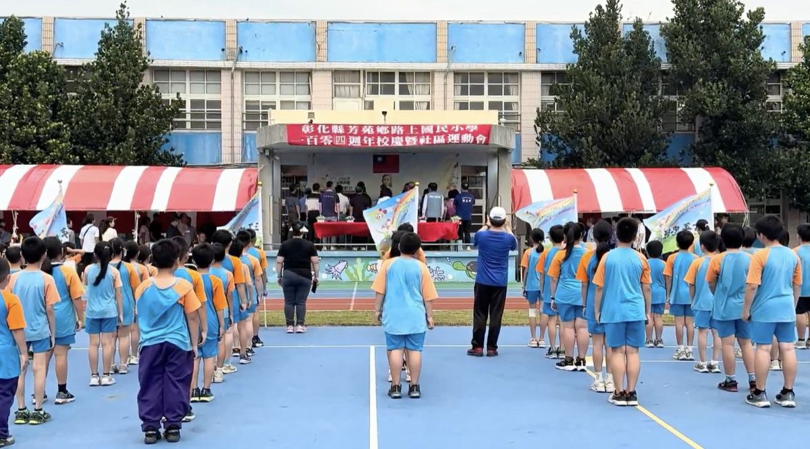
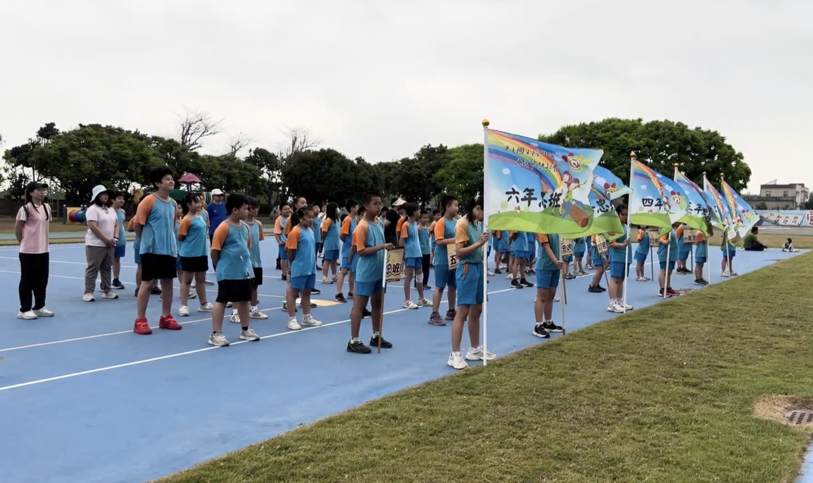
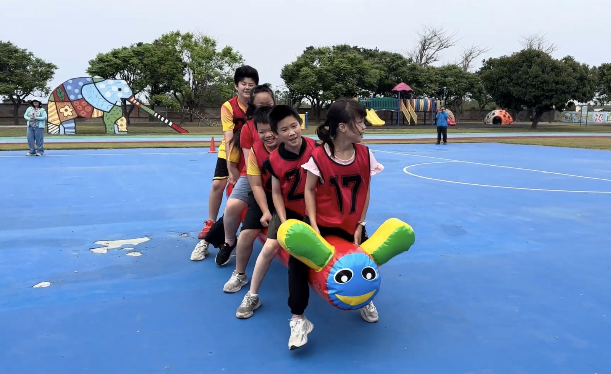
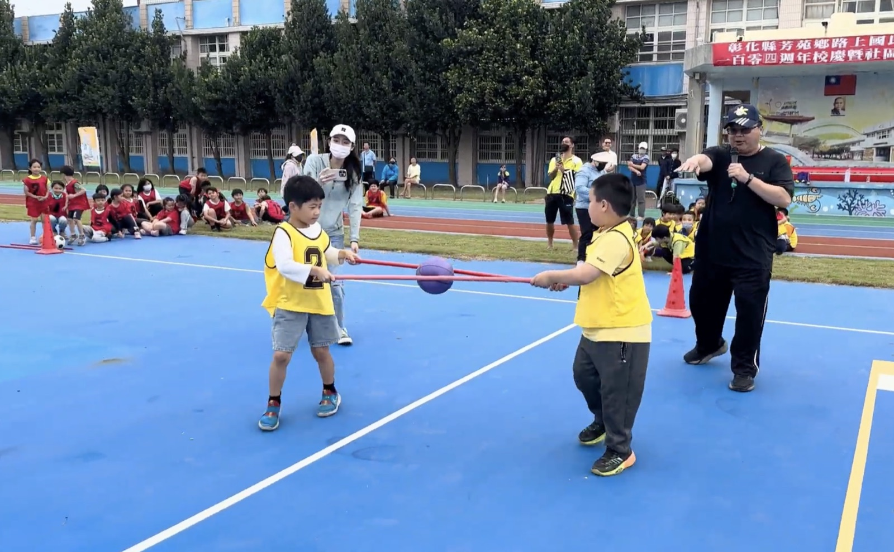

On April 1st, Lushang Elementary School in Fangyuan Township, Changhua County, celebrated its 104th anniversary with a grand Sports Day. The atmosphere was electric, with a massive turnout of guests, local residents, and parents filling the campus with excitement.
Before the official ceremony, the students took center stage to showcase their diverse talents. The audience was treated to the melodic sounds of ocarinas, the thunderous rhythm of Taiko drums, and vibrant dance performances that perfectly set the festive mood for the morning.


Every second counted as they bolted toward the finish line, neck and neck, while the cheers from the sidelines reached a fever pitch.
Following the opening ceremony, the young athletes marched onto the field with pride for the official athlete's oath, signaling the start of the day's competitions. The track soon became the center of attention with the 60-meter and 100-meter sprints. The competition was incredibly fierce, with students pouring every ounce of energy into their runs.
However, the weather eventually forced a change of plans. A steady rain set in, leaving the grounds completely soaked. Putting safety first, the school moved the festivities indoors. Due to the wet track, the much-anticipated Fun Games were moved to the following day.


This unique situation turned the 104th anniversary into a two-day celebration, giving the children even more time to shine. It was a wonderful blend of talent, resilience, and community spirit, making this milestone truly unforgettable for everyone at Lushang.
4月1日，位於彰化縣芳苑鄉的路上國小盛大舉辦了104週年校慶運動會。現場氣氛熱烈，湧入大批嘉賓、社區居民與家長，將校園擠得熱鬧非凡。
在正式典禮開始前，學生們搶先站上舞台展現多元才藝。觀眾們欣賞到陶笛悠揚的樂音、太鼓震撼的節奏，以及活力四射的舞蹈表演，為這個節慶氛圍濃厚的早晨揭開序幕。
開幕典禮結束後，小選手們驕傲地踏入場地，進行正式的選手宣誓，宣告當天賽事正式展開。60公尺與100公尺短跑很快成為全場焦點，比賽競爭異常激烈，學生們全力衝刺，每一秒都至關重要，大家並駕齊驅衝向終點線，場邊的加油聲也隨之達到最高潮。
然而，天氣最終讓活動計畫有所改變。持續降雨讓場地全濕，學校基於安全考量，將後續活動移至室內進行。由於跑道濕滑，原本備受期待的趣味競賽則延後到隔天舉行。這個特殊情況讓104週年校慶變成了為期兩天的慶祝活動，也讓孩子們有更多發揮的機會。這是一場才藝、韌性與社區精神完美結合的活動，讓這個重要的里程碑對路上國小的每一個人來說都格外難忘。
Tap 🔊 to listen · 點喇叭聽發音
We celebrate our birthday every year.我們每年都會慶祝生日。
I like Sports Day very much.我非常喜歡運動會。
The students sang a song.學生們唱了一首歌。
My parents watched the race.我的父母觀看了比賽。
The children danced happily.孩子們開心地跳舞。
Every athlete tried their best.每位運動員都全力以赴。
I won the race.我贏了這場賽跑。
She crossed the finish line first.她第一個衝過終點線。
The weather was rainy.天氣是下雨的。
It started to rain.開始下雨了。
Phrases from the Story
故事裡的實用片語
- celebrate an anniversary慶祝週年We celebrate our school anniversary.
- take center stage成為焦點The students took center stage.
- opening ceremony開幕典禮The opening ceremony began at 9 a.m.
- Safety first.安全第一。Safety first!
- move indoors移到室內We moved indoors because it rained.
- Fun Games趣味競賽The Fun Games were exciting.
Match the word to its meaning
把英文和中文配對
Matched 配對成功：0 / 10